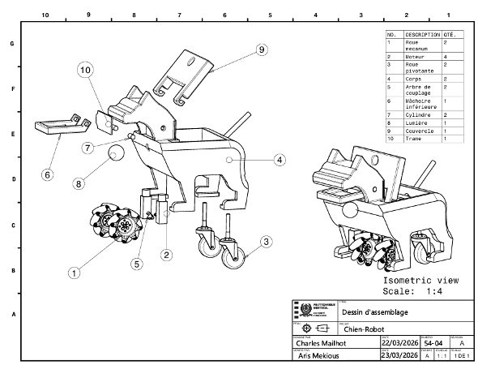
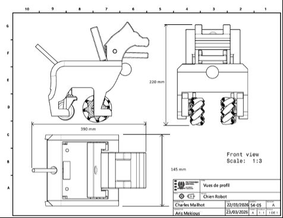

A toy that had to be safe and stimulating
We took on this project as a mandate from a school for autistic children: design a toy that would be safe for a child to interact with, engaging enough to hold their attention, and robust enough to survive daily use in a classroom. Off-the-shelf robotic toys either felt too fragile, too electronic, or too hard to fix once something broke — so we designed and built one ourselves, from a blank CAD file to a fully functional prototype.
What we built
The dog is fully autonomous, 3D-printed, and designed from scratch in CAD — every body panel, joint, and internal bracket. It's built around a few deliberately simple, readable behaviors rather than a long feature list, since predictability matters more than novelty for the kids using it:
- A collar that lights up, giving a clear visual cue when the dog is active.
- A tail that wags and moves independently, driven by its own small mechanism.
- A mouth mechanism that can pick up an object, carry it, and release it at a specific spot — a simple fetch-and-drop behavior.
- Full mobility: forward, reverse, and in-place rotation, so it can navigate a small course on its own.
- Power from just two AA batteries, keeping it lightweight and cheap to keep running.
Designed to be fixed, not replaced
Because this was headed for a classroom, not a lab bench, durability and repairability were treated as design requirements from the start. Every part was chosen and shaped so it could be reprinted or swapped out with basic tools — no proprietary fasteners, no glued-shut assemblies. If a leg cracks or a gear strips, a teacher can replace that one part instead of the whole dog.
Controls
I programmed the Arduino-based control system that ties all of this together: autonomous navigation through a test course, the forward/reverse/rotation logic, the fetch-and-drop sequence for the mouth mechanism, tail movement, and the synchronized LED signals on the collar — all while meeting the safety requirements set for the project (no pinch points within reach, controlled speed, predictable behavior with no erratic movement).
Gallery

